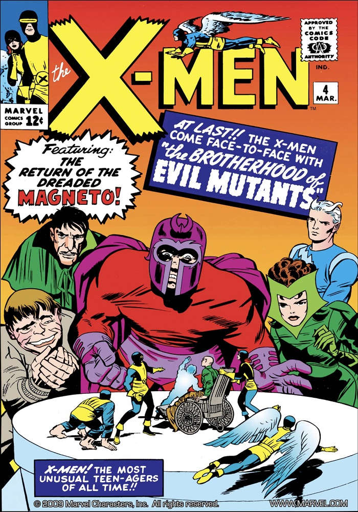

Una aplicación web para practicar el uso de PHP, MYSQL, CSS y Javascript. También hay animaciones que actuan sobre cartas de Marvel Snap. Cuando el usuario hace click en los botones, se crean tablas y se introducen y eliminan registros en una base de datos. Textos de la Wikipedia. Pulsa el botón rojo para conectar a la base de datos.
CEREBRO ON
Los nuevos X-Men

La serie original, The X-Men (luego publicada bajo el nombre de Uncanny X-Men)
apareció en septiembre de 1963, como una analogía de la tensión racial que se
vivía en los Estados Unidos en la época, siendo los líderes de la raza mutante,
Magneto, y el Profesor Xavier (haciendo alusión a los líderes afroamericanos
Martin Luther King y el ya mencionado Malcolm X).
Los primeros números de X-Men presentaron al equipo original, compuesto por
Cíclope, Marvel Girl/Chica Maravillosa, Bestia, Ángel y Hombre de Hielo.
En el número 1 de Giant-Size X-Men (1975), el escritor Len Wein
y el artista Dave Cockrum introdujeron un nuevo equipo que protagonizó
un reavivamiento de los X-Men, a partir del número 94. En Giant-Size X-Men # 1,
el Profesor X recluta a un nuevo equipo formado por varios extranjeros para salvar
a los X-Men. Con el número 94, la revista fue revivida.
La muerte de Thunderbird

Un nativo americano apache y un humano mutante, John Proudstar (Thunderbird) posee una capacidad
atlética sobrehumana.
Nació en una tribu apache en una reserva en Campo Verde, Arizona.
Proudstar fue reclutado por el Cuerpo de Marines de los Estados Unidos durante la Guerra de Vietnam
y obtuvo el rango de cabo.
Luego fue reclutado por el profesor Charles Xavier para unirse a su tercer grupo de X-Men.
La segunda misión del nuevo equipo los llevó a Valhalla Base, Colorado,
para combatir al Conde Nefaria y los Ani-Men. Cuando Nefaria intentó escapar en un avión,
Proudstar saltó a bordo. Sin tener en cuenta las órdenes del Profesor X de saltar a la seguridad,
Thunderbird lo golpeó con sus puños. El avión explotó, matando a Proudstar.
Enter: the Phoenix!

Jean Grey debutó bajo el nombre clave Marvel Girl en The X-Men #1 (septiembre de 1963),
(Stan Lee / Jack Kirby).
Inicialmente poseyendo la habilidad de telequinesis, al personaje se le concedió más tarde el poder
de la telepatía. Jean fue la quinta y última integrante
en unirse al equipo original de X-Men y su primer integrante femenino. Jean y los X-Men fueron enviados por
el Profesor-X a una misión en una base espacial, donde se enfrentaron a Erik el Rojo.
Erik el Rojo perseguía
a la princesa Lilandra. Los X-Men la salvan, pero al volver a la Tierra, su nave es dañada
y pierde el blindaje. Jean se ofrece a pilotar la nave creyendo que su telequinesis la protegerá contra
la radiación cósmica, pero no fue así. Los gritos mentales de agonía de Jean son escuchados por la poderosa
entidad cósmica conocida como la Fuerza Fénix. Cuando la nave se precipitó a las aguas de la Bahía de Jamaica,
Jean emergió pronunciando las palabras "Ya no soy la persona que conocísteis, X-Men, soy pasión y fuego encarnado
ahora y siempre. Soy Fénix".
Marvel Girl

Jean Grey debutó bajo el nombre clave Marvel Girl en The X-Men #1 (septiembre de 1963),
creado por el escritor Stan Lee y el artista y coguionista Jack Kirby.
La única miembro femenina del equipo original, Marvel Girl, fue una parte habitual del equipo
hasta la publicación de la serie.
Inicialmente poseyendo la habilidad de telequinesis,
al personaje se le concedió más tarde el poder de la telepatía. Cuando Jean tenía dieciséis años,
el Profesor Xavier la invitó a unirse a los X-Men, el equipo de jóvenes mutantes.
Jean fue la quinta y última integrante en unirse al equipo original de X-Men
(Cyclops, Iceman, Angel, Beast, Marvel Girl).
¡Phoenix debe morir!

Después de un encuentro con el Club Fuego Infernal y manipulación por parte de Mente Maestra
y Emma Frost, Phoenix se convirtió en la Reina Negra del Club.
Se liberó del control de Mente Maestra, pero se transformó en "Dark Phoenix".
Luchó contra los X-Men y huyó a las estrellas, devorando la energía del sistema estelar D'Bari
para satisfacer su "hambre". Aniquiló a los cinco mil millones de habitantes de
su cuarto planeta y destruyó un cercano observatorio Shi'Ar, regresando después a la Tierra.
Allí, fue derrotada en combate psiónico por el Profesor Charles Xavier y recuperó el control.
El grupo fue transportado a continuación al espacio por los Shi'Ar y sometido a un juicio por combate.
La victoria parecía segura para la Guardia Imperial Shi'Ar, cuando Fénix resurgió como Fénix Oscura
Arrepentida, se suicidó en la Luna de la Tierra ante los ojos de un horrorizado Cíclope.
La Fuerza Fénix regresó entonces a su estado de ser de energía pura.
El retorno de Jean Grey

Muchos meses después de la muerte de Fénix, los Vengadores encontraron un capullo con Jean en su interior
bajo la bahía de Jamaica y lo llevaron a los Cuatro Fantásticos para su estudio y Jean se liberó.
Al principio, fue incapaz de recordar su encuentro con la Fuerza Fénix,
pero con la ayuda de los Vengadores y los Cuatro Fantásticos recordó lo sucedido.
Como resultado
de sus angustiosas experiencias, Jean había perdido sus poderes telepáticos, pero la fuerza de sus poderes
telequinéticos había aumentado considerablemente. Jean no informó a su familia de su regreso porque
no sabía cómo dar la noticia.
Jean se sintió muy perturbada al enterarse de la actual ola de sentimiento
antimutante que había surgido en su ausencia. También le sorprendió que los X-Men estuvieran trabajando
junto a Magneto, el mayor enemigo de los X-Men en el pasado. Jean decidió que los X-Men originales
debían hacer algo, ya que creía que el nuevo equipo se había desviado del sueño del profesor Xavier.
X-Factor

En un intento más por tener control sobre la creciente abundancia de mutantes en el mundo,
el gobierno de los Estados Unidos, decidió financiar el proyecto X-Factor: Un equipo de mutantes
que trabajara directamente para el gobierno como agentes especiales, una especie de policía mutante.
Para esto, el gobierno, con el apoyo de Cameron Hodge, decidió reclutar a los cinco X-Men originales.
Este equipo se mantuvo distante de los nuevos X-men, en gran parte debido a que en ese momento
los X-Men se habían aliado con el supervillano Magneto.
X-Factor combatió a los Merodeadores durante la «Masacre Mutante» de los Morlocks.
Como consecuencia de este combate, Ángel perdió sus alas originales, y posteriormente cayó bajo
la influencia de Apocalipsis, quien lo convirtió en "Arcángel", el líder de sus Jinetes.
Mientras estuvo ausente, Arcángel fue reemplazado en el equipo por el morlock Calibán.
Shadowcat

Katherine Anne «Kitty» Pryde es una superheroína mutante del universo Marvel, miembro de los X-Men.
Fue creada por el guionista Chris Claremont e ilustrada por John Byrne. Apareció por primera vez
en Uncanny X-Men vol. 1 #129 (enero de 1980).
Pryde posee una habilidad de «fase» que le permite a ella, así como a los objetos o personas
con las que está en contacto, volverse intangible. Este poder también interrumpe cualquier
campo eléctrico por el que atraviesa, y le permite simular levitación.
Es la persona más joven en unirse a los X-Men, e inicialmente fue mostrada como una
"hermana adolescente" para muchos miembros mayores de los X-Men, ocupando el papel
de figura de contraste literario para los personajes más establecidos.
Durante este tiempo, ocasionalmente usó los pseudónimos Sprite y Ariel,
pasando por muchos cambios de vestuario hasta que se conforma con su característico
traje negro y dorado. Durante la miniserie Kitty Pryde y Wolverine, se cambia el nombre a Shadowcat
The New Mutants

Los Nuevos Mutantes fueron creados por Chris Claremont y Bob McLeod, apareciendo por primera vez en Marvel Graphic Novel # 4 (1982). El Profesor Charles Xavier tenía la idea de volver a habilitar su Escuela Xavier para jóvenes superdotados con una nueva generación de estudiantes, pues los X-Men ya eran adultos. Cuando los X-Men se perdieron en el espacio combatiendo la amenaza de los alienígenas Brood, Xavier decidió reclutar a un nuevo grupo de jóvenes alumnos. Sus primeras reclutas fueron la joven vietnamita Xi'an Coy Mahn, alias Karma, que fue recomendada por Reed Richards de los Cuatro Fantásticos, y Rahne Sinclair, alias Wolfsbane, hija adoptiva de la Dra. Moira MacTaggert. Xavier y estas dos jóvenes, partieron a rescatar a la joven Danielle Moonstar, una india cheyenne, que había sido secuestrada por Donald Pierce, el Alfil Blanco del Club Fuego Infernal. Xavier derrotó a Pierce con ayuda de las jóvenes, y de paso rescataron a dos jóvenes prisioneros de Pierce: Sam Guthrie, alias Bala de Cañón, y Roberto DaCosta, alias Sunspot.
Excalibur

Excalibur se forma tras dar por muertos a los X-Men, debido a los acontecimientos durante la saga
"la Caída de los Mutantes".
Esto provocó que tres de sus integrantes cayeran en una profunda depresión y decidieron emigrar
hacia Inglaterra
Nightcrawler, el mutante alemán, el más experimentado del grupo debido a su tiempo
con los X-Men, Kitty Pryde, la integrante más joven de los X-Men y Lockheed, un simpático dragón alienígena.
Una vez que llegaron a Inglaterra, unieron fuerzas con otros tres personajes para formar Excalibur.
Fénix II (Rachel Summers), hija de Jean Grey y Scott Summers en otra línea temporal, con los poderes de Phoenix.
Capitán Britania (Brian Braddock), el campeón enmascarado de Inglaterra.
Y finalmente Meggan, un hada mística pareja del Capitán Britania.
Su base de operaciones está ubicada en la Isla Muir (Escocia).
Magneto

Magneto, un poderoso mutante con la habilidad de generar y controlar campos magnéticos,
ha sido el enemigo más eminente que hayan tenido los X-Men desde su creación.
Posteriormente los guionistas han dado cuerpo al personaje y su origen,
revelando que es un superviviente del holocausto nazi, cuyas acciones se encaminan
a la protección de la raza mutante y evitar que sufra un destino similar.
A pesar de no tener miramientos sobre hundir un submarino ruso que lo atacó y provocar
un volcán en la ciudad de Varykino como venganza, sí da tiempo a una evacuación masiva
antes de que la lava arrase la ciudad. Asimismo, se ve impactado cuando derriba en duelo
a la X-Men adolescente Kitty Pryde. Cargado de remordimientos, al haber casi matado
a una mutante tan joven, Magneto pone fin a sus intentos de dominación global
y se replantea el rumbo que su vida ha tomado.
NO MORE MUTANTS!!

Después de perder el control de sus habilidades de desorden de la realidad,
la Bruja Escarlata mató involuntariamente a varios héroes, incluyendo Vision, Hawkeye y Ant-Man.
Un equipo combinado de héroes se dirigió a Genosha para hablar con ella,
pero el mundo se volvió blanco y se despertó en una realidad idealista donde los mutantes eran la especie
dominante y nadie recordaba la realidad previa, sólo Wolverine.
Logan buscó a sus antiguos compañeros de equipo,
tanto X-Men como Avengers, en un intento por restaurar sus recuerdos y devolver el mundo a su estado anterior.
Fue Quicksilver, hermano de Wanda y ambos hijos de Magneto, el que provocó a su hermana para cambiar la realidad.
Cuando Magneto se dio cuenta de lo que estaba pasando, se volvió contra su hijo. A su vez, Wanda culpó a su padre
y a su obsesión por el dominio mutante por arruinar sus vidas. Entonces, Wanda usó sus poderes y pronunció tres palabras:
NO MÁS MUTANTES.
El mundo aparentemente volvió a su estado original, hasta que los mutantes de todo el planeta
comenzaron a perder sus poderes. La población mutante bajó de cientos de miles a una pequeña fracción.
Brotherhood of Evil Mutants
La Brotherhood of Evil Mutants original fue fundada por el extremista y terrorista mutante Magneto,
el "Amo del Magnetismo", en parte como una respuesta a los X-Men de su némesis, el Profesor X.
El equipo original lo conformaron el propio Magneto, su lacayo el Sapo,
el ilusionista Mastermind y los propios hijos de Magneto (situación que ellos no sabían en ese momento):
Quicksilver/Mercurio y la Bruja Escarlata.
Tiempo después, la Brotherhood renacería, con una nueva líder.
La nueva organizadora fue Mystique, quien inspirada en los ideales de Magneto, reformó al grupo.
Los integrantes de este nuevo equipo fueron Blob, el piroquinético Pyro, Avalancha y la mutante vidente Destiny,
pareja sentimental de Mystique.
Esta Brotherhood debutó cuando intentaron asesinar al senador Robert Kelly.
De haberlo logrado, hubieran provocado el mundo apocalíptico de "Días del Futuro Pasado",
pero esto fue evitado por la joven X-Men Kitty Pryde (con ayuda de su contrapartida del futuro).